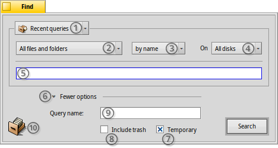
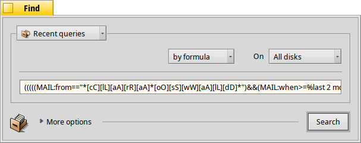

| インデックス |
|
検索ウィンドウ 基本クエリ - "名前で検索" 高度なクエリ - "属性で検索" さらに高度なクエリ - "式で検索" 結果ウィンドウ クエリテンプレート |
クエリ
クエリ (Query) はファイル属性に基づいたファイル検索で、Tracker 内やターミナル内で実行できます。クエリは、/boot/home/queries/ に、デフォルトでは消去されるまで 7 日間保存されます。これらが静的な検索結果のリストではなく、開くたびに常に新しい検索を引き起こすクエリ式であることに注意してください。
さらによいことに、再クエリのためにダブルクリックの必要はありません。ほかのフォルダーのように、保存したクエリを右クリックでドリルダウンして、サブメニューで移動してください。
 検索ウィンドウ
検索ウィンドウ
クエリを開始するには、Deskbar メニュー、任意の Tracker ウィンドウ、またはデスクトップ (それは実際にフルスクリーン Tracker ウィンドウです) のいずれかから、 メニューを実行します。ショートカットは、ALT F です。以下の検索ウィンドウが表示されます。
以前のクエリ、または保存済クエリを選択するか、または現在のクエリをクエリテンプレート (Query Template) として保存します。
から特定のファイルタイプまで検索範囲を絞り込みます。
- 検索方法を決定します。
- - ファイル名による基本的な検索
- - 進んだ検索。1 つまたは複数の属性に対して検索語を指定します。
- - さらに進んだ検索。複雑なクエリを微調整できます。
検索するドライブを指定します。
検索語を入力します。
三角アイコン (expander) は追加オプションの表示 / 非表示を切り替えます。
クエリを ７ 日後に自動消去したくない場合は、 チェックボックスのチェックを外します。
クエリが、と考えられる場合はチェックします。
オプションとして、クエリを保存する場合名前を入力します。
このアイコンをどこにでもドラッグ＆ドロップして、クエリを保存できます。右クリックで行うと、テンプレートとして保存のオプションが現れます。
基本クエリ - "名前で検索"
マウントされたディスク上で、あるパターンと一致するすべてのファイルを簡単に見つけたい場合は、検索方法を のままにしておきます。テキストボックスへ検索語を入力し、ENTER キーを押してください。
高度なクエリ - "属性で検索"
特定のファイルタイプの属性を検索する、より高度なクエリを作成できます。それが動作するためには、これらの属性はインデックス化されている必要があります。

例として、ファイルタイプを から に設定することから始め、検索方法を に変更します。
これにより、テキストボックスの左側にポップアップメニューを、また下側に と ボタンを追加します。メニューから、クエリする属性を決めます。 および ボタンで追加の属性のクエリや、再びそれらを削除できます。これらの属性は、AND/OR で論理的にリンクできます。
例として、メールをクエリしましょう。

件名が "sufflé" あるいは "impossible" である、過去 2 か月に Clara Oswald が送信したすべてのメールを探している場合、検索ウィンドウはこのようになります。
ごらんのように、時間ベースの属性を介した検索は、いくつかの便利な表現をサポートしています。"last 2 months (過去 2 ヶ月)" に加えて、"today (今日)"、"yesterday (昨日)"、"Monday (月曜日)"、"last Monday" (先週の月曜日になるでしょう)、または "last 2 minutes/hours/days/weeks (過去 2 分間 / 時間 / 日 / 週)" も使えます。
検索結果の数を減らすのに良い方法です。
さらに高度なクエリ - "式で検索"
式クエリの手入力はとっつきにくく、かつ、まったく非実用的です。にもかかわらず、それには用途があります。
上記の、sufflé などに関する Clara のメールの属性によるクエリを例にとります。属性と検索語がすべて確定された場合に、 モードへの変更を試みると、この 1 行のクエリ文字列に圧倒されるでしょう。
読みやすく編集されたテキストとしてもう一度。
(((((MAIL:from=="*[cC][lL][aA][rR][aA] [bB][oO][tT][tT][eE][rR][sS]*")
&&(MAIL:when>=%2 months%))
&&(MAIL:subject=="*[vV][iI][bB][rR][aA][pP][hH][oO][nN][eE]*"))
||(MAIL:subject=="*[sS][kK][eE][pP][tT][iI][cC][aA][lL][iI][tT][yY]*"))
&&(BEOS:TYPE=="text/x-email"))
何に使えるでしょうか。
メール、フォーラム、あるいは IRC に、文字列をコピーし貼り付けることで、ほかの人が使ったり、デバッグできたりするかもしれません。
この方法を使って、 モードでクエリを構築した後、 モードへ変更して、検索文字列を楽に生成できます。シングルクオートで囲むと、この文字列はターミナル中の query コマンドで使用できます。
必要なところへの括弧の挿入や、部分的に大文字小文字を区別することや、修正により論理結合を否定 (例:NOT AND のために "==" を "!= に変える) することでクエリを微調整できます。必要とすることは、正規表現に対する基本的な理解と、たぶんいくつかのスクリプトの基本だけです。
結果ウィンドウ
検索を始めたら、検索ウィンドウは結果ウィンドウと入れ替わるでしょう。ここに、"server" をクエリした例があります。

灰色の背景のほかは、結果ウィンドウは、ほかの Tracker ウィンドウとまさしく同様に動作します。いくつかのものには、注目すべき価値があります。
ファイルまたはフォルダーを開くには、Path 属性をダブルクリックします。
または ALT G によって、検索ウィンドウを呼び戻してクエリを改良できます。
クエリはライブです、つまり、検索基準と一致するファイルがシステム上に現れるか、またはシステム上から消える場合、この変更は検索結果にリアルタイムで反映されます。
特定のファイルタイプのクエリ結果のためにふさわしい属性レイアウトを割り当てられます。テンプレートを作成するファイルタイプのファイルを含んでいるフォルダーを開き、クエリ結果を示したいものになるように属性を配置します。 で、このレイアウトをコピーします。
/boot/home/config/settings/Tracker/DefaultQueryTemplates を開き、新しいフォルダーを作成し、それを group/filetype にリネームします。ここで、/ は _ に置き換えてください (例: "audio_x-mp3")。新しいフォルダーを開き、 でレイアウトを貼り付けます。
クエリテンプレート
保存済クエリをダブルクリックすると、すぐにファイル検索が始まり、ただちに結果ウィンドウが開きます。しかし、これらのそのものの検索パラメーターで検索するのではなく、それらを少しだけ式調整の始点として使うかもしれません。
メニュー項目を使うか (一番上のスクリーンショットの (1) を見てください)、右クリックしながら (10) のアイコンをどこかにドラッグ＆ドロップすると、そのようなテンプレートを作成できます。テンプレートをダブルクリックしても結果ウィンドウは開かず、検索パネルが開きます。そこですばやく検索文字列の変更、または属性の追加 / 削除ができる機会が与えられます。
クエリテンプレートを保存することを選択すれば、それらは検索パネルの最近使ったクエリメニューに表示されるでしょう。